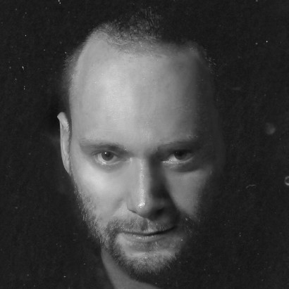
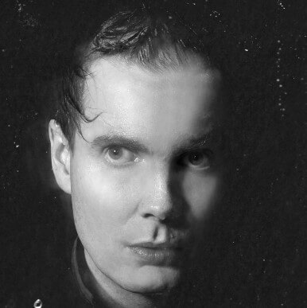
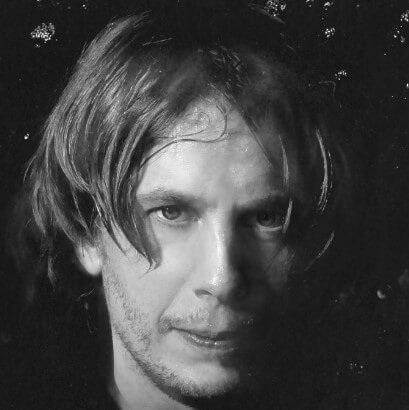

Esta es una página orientada a introducirlos al mundo de Sigur Rós
¿Qué es Sigur Rós?
Según nuestros contribuyentes favoritos de Wikipedia los definen de la siguiente manera
"Sigur Rós (Acerca de este sonido /'sɪːɣʏr rouːs/ (?·i), en islandés: «Rosa de victoria») es una banda
islandesa de post-rock,
con elementos de shoegazing y minimalismo. La banda es conocida por su sonido etéreo y por el falsete de
voz de su cantante
Jón Þór Birgisson."
 Georg Holm o Goggi
Es el bajista de la banda islandesa Sigur Rós. Goggi es el
miembro de la banda que más atención recibe por parte de la prensa inglesa e
internacional en general, debido a que es el que habla con mayor fluidez inglés
de todos los miembros de la banda.
 Jón «Jónsi» Þór Birgisson
Es el guitarrista y primera voz de la banda islandesa de post-rock Sigur Rós.
Toca la guitarra eléctrica con un arco de cello para crear el sonido característico de la banda. Su
estilo al cantar
es mayormente en falsetto. Es ciego del ojo derecho. Junto a su pareja Alex Somers ha realizado una
colaboración
artística llamada Jónsi & Alex, lanzado su libro homónimo en noviembre de 2006. En julio de 2009
lanzaron su primer
álbum llamado Riceboy Sleeps.
A finales de enero de 2010, Jónsi anunció que Sigur Rós estaba en "descanso indefinido," desechando los
planes de la
banda de un nuevo álbum, previamente anunciado para ser lanzado en 2010, diciendo que "no eran más que
rumores."
Volvieron a estar juntos en 2012 y lanzaron el álbum Valtari y luego el álbum Kveikur.
 Orri Páll Dýrason
es el ex-baterista de la banda islandesa Sigur Rós. Se unió a la banda en 1999 poco después de que
grabaron su
álbum Ágætis byrjun a la salida del anterior baterista Ágúst Ævar Gunnarsson. Se casó con Lukka
Sigurðardóttir
en Hawaii en 2005 y tiene una hija de una relación anterior, Vaka. Orri y Lukka viven en Mosfellsbær, no
lejos
de Reikiavik y a poca distancia del estudio de Sigur Rós, llamado Sundlaugin. Lukka y el novio de Jónsi,
Alex Somers forman los Toothfaeries, quienes diseñan todo el vestuario e imagen de Sigur Rós.
 2007 - Hvarf/Heim
2007 - Hvarf/Heim